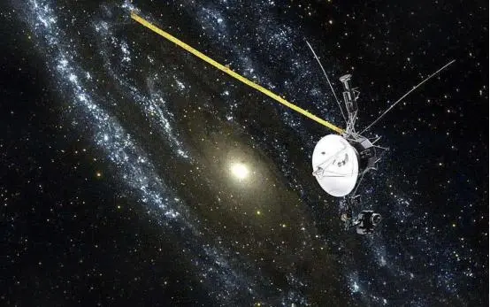
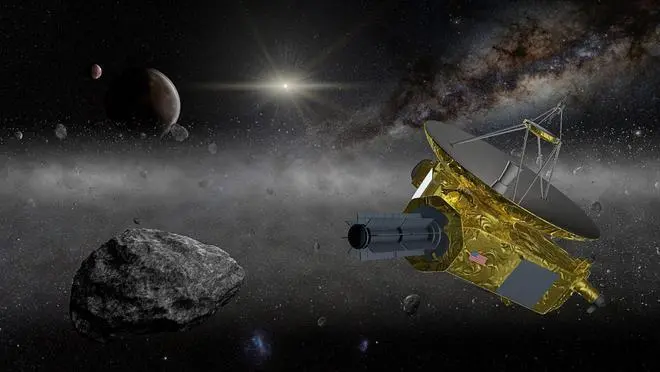
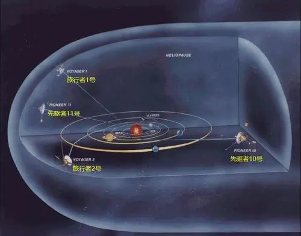

中国戏曲主要是由民间歌舞、说唱和滑稽戏三种不同艺术形式综合而成。它起源于原始歌舞，是一种历史悠久的综合舞台艺术样式。经过汉、唐到宋、金才形成比较完整的戏曲艺术，它由文学、音乐、舞蹈、美术、武术、杂技以及表演艺术综合而成，约有三百六十多个种类。它的特点是将众多艺术形式以一种标准聚合在一起，在共同具有的性质中体现其各自的个性。中国的戏曲与希腊悲剧和喜剧、印度梵剧并称为世界三大古老的戏剧文化，经过长期的发展演变，逐步形成了以“京剧、越剧、黄梅戏、评剧、豫剧”五大戏曲剧种为核心的中华戏曲百花苑。
太阳系认识过程：
在1977年发射的两个航天器，“旅行者1号”于2012年飞入星际，“旅行者2号”也于2018年加入。目前两个航天器和地球方面仍有交流。
美国国家航空航天局“新视野号”航天器目前正在海王星外名为“柯伊伯带”的寒冷区域进行探索，而最终它将离开太阳系。
“先驱者10号”和“先驱者11号”探测器最终也将在星际中默默旅行，数十年前它们已经耗尽了能源供应。


